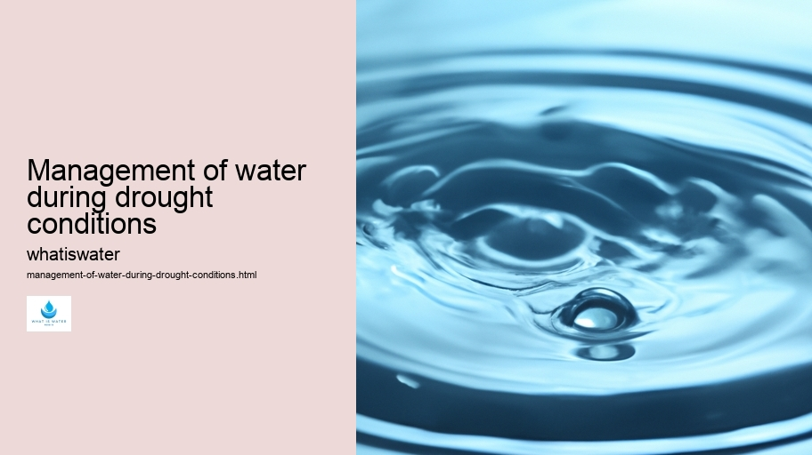

Hydrological Cycle
Hydrological Cycle
Evaporation and transpiration
Condensation and cloud formation
Precipitation and rain patterns
Surface runoff and river systems
Groundwater flow and aquifers
Snowmelt and glacial processes
Water storage in oceans lakes and reservoirs
Soil moisture and infiltration
Water balance and budgeting
Human impact on the hydrological cycle
Marine Ecosystems
Marine Ecosystems
Coral reefs and their biodiversity
Mangrove forests as coastal protectors
Ocean currents and climate regulation
Deepsea habitats and extremophiles
Intertidal zones and estuarine ecosystems
Marine food webs and trophic levels
Freshwater Ecosystems
Freshwater Ecosystems
Conservation efforts for marine species
Marine biogeochemical cycles
Impact of global warming on oceans
Water Resource Management
Water Resource Management
Rivers streams and creeks ecosystems
Lakes ponds wetlands habitats
Biodiversity in freshwater environments
Aquatic plants role in oxygenation
Freshwater fish species diversity
Invasive species impact on freshwater systems
Pollution threats to freshwater sources
Conservation strategies for freshwater biomes
Role of wetlands in flood control
Importance of riparian buffers
Cultural Significance of Water
Cultural Significance of Water
Sustainable water use practices
Desalination technologies for fresh water supply
Wastewater treatment processes
Rainwater harvesting techniques
Management of water during drought conditions
Transboundary water resource politics
Infrastructure for water distribution
Agricultural irrigation efficiency
Urban water demand management
Impact of climate change on water resources
About Us
Contact Us

Management of water during drought conditions
>
Water Efficiency
Managing water resources efficiently during times of drought is an essential task that demands careful planning, innovative strategies, and community involvement. Droughts are natural phenomena characterized by prolonged periods of insufficient rainfall, leading to depleted water supplies.
Management of water during drought conditions - Hydration and Health
Hydration and Health
Watersheds
Water Filtration
Water Law and Policy
Waterborne Diseases
As these events become more frequent and severe due to climate change, it's imperative for governments, water authorities, and individuals to adopt measures ensuring the sustainable use of this precious resource.
The core principle in managing water during a drought is conservation.
Water Efficiency
This begins with raising awareness among the populace about the severity of water scarcity and encouraging practices that reduce consumption. Simple actions like fixing leaks, taking shorter showers, or using drought-resistant plants in landscaping can significantly curtail water usage.
Agriculture consumes the largest share of freshwater resources; hence optimizing irrigation techniques is vital. Traditional methods often lead to considerable wastage through evaporation or runoff.
Hydrogeology
Employing drip or subsurface irrigation systems can enhance efficiency by delivering water directly to plant roots while minimizing losses.
Furthermore, reusing wastewater after appropriate treatment opens up a new avenue for reducing demand on freshwater sources.
Watersheds
Treated greywater from sinks, showers, and laundry can be used for toilet flushing or garden watering.
Management of water during drought conditions - Water Law and Policy
Water Law and Policy
Waterborne Diseases
Ocean Conservation
Hydrogeology
Advanced purification technologies even allow for recycled wastewater to meet drinking standards—a practice already adopted in several arid regions globally.
In urban areas where concrete surfaces prevent rainwater absorption into groundwater reservoirs, implementing green infrastructure like permeable pavements and rain gardens helps capture precipitation and recharge aquifers. Such measures also mitigate flooding risks when rains do occur following dry spells.
Pricing policies play a pivotal role as well—setting higher tariffs for increased usage disincentivizes waste and funds infrastructure improvements.
Waterborne Diseases
Water Law and Policy
Moreover, investing in research on drought-resistant crops and supporting farmers through subsidies can help maintain food security without exerting undue pressure on dwindling water reserves.
International cooperation is equally important since rivers often traverse national boundaries. Shared management agreements must ensure equitable distribution amongst riparian nations while safeguarding ecosystem health.
In conclusion, addressing the challenges posed by drought conditions requires a multifaceted approach which prioritizes conservation while innovating agricultural practices and rethinking urban design.
Ocean Conservation
Through collaborative efforts grounded in sustainability principles coupled with adaptive governance mechanisms responsive to changing climatic patterns, we can secure our future against the threats posed by diminishing freshwater supplies.
Management of water during drought conditions - Floods
Watersheds
Water Filtration
Water Law and Policy
Hydrological Cycle
Check our other pages :
Conservation strategies for freshwater biomes
Marine Ecosystems
Cultural Significance of Water
Aquatic plants role in oxygenation
Frequently Asked Questions
What are the most effective strategies for managing water supplies during drought conditions?
The most effective strategies include implementing water rationing, investing in water-efficient technologies, promoting conservation practices among consumers, developing alternative water sources like desalination or rainwater harvesting, and enhancing infrastructure to reduce leakage and waste.
How can individuals contribute to conserving water during a drought?
Individuals can conserve water by reducing consumption through shorter showers, fixing leaks, using drought-resistant plants in landscaping, avoiding non-essential water use such as washing cars or hosing down driveways, and employing rain barrels to collect rainwater for outdoor use.
What role does agriculture play in water management during droughts, and how can it adapt?
Agriculture is often the largest consumer of water. It can adapt by adopting more efficient irrigation techniques such as drip irrigation, planting drought-tolerant crops, practicing soil moisture conservation methods, scheduling irrigation according to actual crop needs, and utilizing weather forecasting to plan agricultural activities.
How do government policies impact water management during droughts?
Government policies can significantly impact water management by setting regulations that limit usage during peak times, providing incentives for the adoption of water-saving technologies and practices both in agriculture and industry sectors, funding research into new resource management solutions, establishing emergency response plans for severe droughts and educating the public about the importance of conservation.
What long-term measures should be implemented to prepare for future droughts?
Long-term measures include investing in infrastructure upgrades to prevent losses from leaks or inefficient systems; creating sustainable landscaping norms; encouraging graywater reuse; expanding reservoir capacity; integrating climate change projections into resource planning; fostering cooperation between different regions on shared watersheds; improving groundwater recharge efforts; and revising building codes to require more efficient appliances.